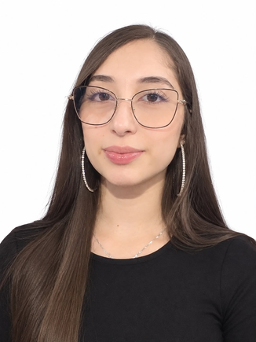

Desarrollo web
Aplicaciones completas, con frontend, backend y APIs REST.

¡Hola!, soy
Curso noveno semestre en la Universidad de Caldas. Me interesa el desarrollo de aplicaciones, la inteligencia artificial y los despliegues con prácticas DevOps. Aquí reúno los proyectos que he construido durante mi formación.
Soy estudiante de noveno semestre de Ingeniería en Informática en la Universidad de Caldas. Durante la carrera he desarrollado aplicaciones web, aplicaciones móviles para Android, proyectos de inteligencia artificial y despliegues con integración continua, muchos de ellos en equipo.
Desde 2022 trabajo como secretaria en Llantas Cordón, donde atiendo clientes, elaboro facturas y llevo el control de la información del negocio. Esa experiencia me ha enseñado a organizarme, a comunicarme bien y a entender cómo la tecnología puede ayudar a un negocio real.
Me considero una persona responsable, con disposición para aprender y para trabajar en equipo. Busco realizar mi práctica académica en un lugar donde pueda aportar, aprender del equipo y crecer profesionalmente.
Ingeniería en Informática
Universidad de Caldas · 9.º semestreDesarrollo de aplicaciones
Web, móvil y APIsInteligencia artificial
Deep learning · DevOpsDisponible
Para práctica académica (grado previsto en 2027)Áreas en las que he trabajado durante mi formación, con las tecnologías que he usado en cada una según mis repositorios.
Aplicaciones completas, con frontend, backend y APIs REST.
Redes neuronales, deep learning y uso de modelos de lenguaje en aplicaciones.
Integración y despliegue continuo, control de versiones y contenedores.
Aplicaciones nativas para Android.
Modelado, consultas y análisis y visualización de información.
Bases de programación orientada a objetos y estructuras de datos.
Proyectos que he desarrollado durante mi formación universitaria, individualmente y en equipo. Cada uno enlaza a su repositorio en GitHub.
Plataforma para gestionar y reservar espacios de coworking. Los usuarios consultan la disponibilidad por fechas, hacen reservas y ven su calendario. El panel administrativo permite gestionar espacios, usuarios, roles, horarios y estadísticas.
Ver repositorioSolución que captura la conversación entre médico y paciente, la transcribe y genera un borrador estructurado de la nota clínica. Combina inteligencia artificial, reconocimiento automático de voz y procesamiento de lenguaje natural. Incluye la gestión del proyecto, los requerimientos y los casos de uso.
Ver repositorioRed neuronal entrenada en Keras con el conjunto de imágenes CIFAR-10. El modelo se expone con una API REST hecha en FastAPI y una página web permite cargar una imagen y ver la predicción.
Ver repositorioAplicación que recomienda lugares turísticos de Manizales. El backend usa FastAPI con PostgreSQL y PostGIS para búsquedas por ubicación, y se conecta a un modelo de lenguaje. El frontend está hecho en React con Vite.
Ver repositorioAplicación en React y Vite con un flujo de integración y despliegue continuo: cada cambio en el repositorio activa el pipeline que construye la aplicación y la publica en la nube.
Ver repositorioAplicación web para trabajar la metodología de Marco Lógico con casos de estudio de la CEPAL. Tiene una versión en HTML, CSS y JavaScript y otra en React, preparadas para publicarse.
Ver repositorioAplicación web en ASP.NET MVC con C#, organizada en controladores y vistas, con acceso a datos mediante ADO.NET.
Ver repositorioAplicación web en Node.js organizada en rutas, middleware, servicios y esquemas, con vistas en EJS y conexión a base de datos.
Ver repositorioAplicación web desarrollada en equipo con Node.js y vistas en EJS, con el entorno de ejecución configurado en Docker Compose.
Ver repositorioAplicaciones nativas en Kotlin: una calculadora básica, una calculadora de IMC y el proyecto final del curso, además de talleres guiados de Codelab.
Ver repositorioProyecto fintech final del curso de Programación Orientada a Objetos, desarrollado en Java con NetBeans.
Ver repositorioAplicación que calcula el índice de masa corporal, muestra su clasificación y da recomendaciones de hábitos, con gráficos y tablas de referencia.
Ver repositorioEn mi GitHub también están talleres de APIs con Node.js y Laravel, ejercicios de Programación Web y otros trabajos de clase.
Ver los 27 repositoriosMi experiencia laboral y mi formación académica.
Llantas Cordón · Manizales
Atención al cliente presencial y telefónica; elaboración de facturas y registro de ventas; manejo de Excel para el control y la organización de la información del negocio.
Universidad de Caldas
Noveno semestre cursado; grado previsto al terminar la práctica académica.
Asociación Educativa
Estoy disponible para realizar mi práctica académica. Si quieres saber más sobre mi perfil o mis proyectos, escríbeme.
maria.cordonv@gmail.com
+57 321 806 7307
github.com/Majitoooo
Manizales, Caldas, Colombia